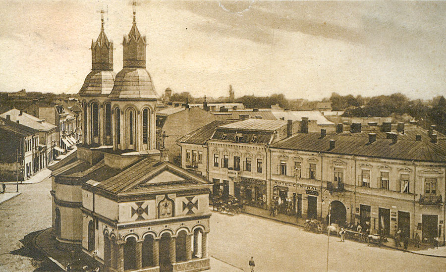
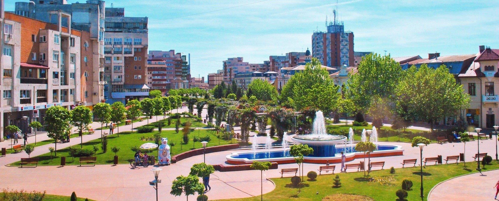

Târgu Jiu is the capital of Gorj County in the Oltenia region of Romania. It is situated on the Southern Sub-Carpathians, on the banks of the river Jiu. Eight localities are administered by the city: Bârsești, Drăgoieni, Iezureni, Polata, Preajba Mare, Romanești, Slobozia and Ursați.The city takes its name from the river Jiu, which runs through it. In antiquity, there was a Dacian village in around the location of today's city surrounded by forests. After the Roman conquests of Oltenia (101-102), military units were stationed around the roads that connected different important routes at the time. During the digging of the Târgu Jiu - Rovinari railroad, mosaics, coins, ceramics and Roman bricks were found in the south-eastern part of the city.
- History
- The ancient testimonies supports the idea that Târgu Jiu was a commercial town (a vicus) while under the Roman Empire's rule. A very important route that connects the Danube to Transylvania runs through the city, so historians believe that part of the Roman army under Trajan's leadership stayed and then passed in the actual location of the city.

- Ancientry
- After the 271 withdrawal of the Roman army, the city remained in the Latin influence zone, mainly because of Constantine The Great's involvement in Oltenia which he sought to bring under imperial rule. The importance of keeping this zone under Rome's control was underlined by Constantine's decision to build a second bridge over the Danube between today's Corabia (then Sucidava) and the Bulgarian city of Gigen. It was over 2400 meters long, one of the longest of all time.
- Middle Ages
- This territory was under Litovoi's rule, a Vlach (Romanian) voivode in the 13th century, whose territory comprised northern Oltenia. He is mentioned for the first time in a diploma issued by king Béla IV of Hungary (1235–1270) on 2 July 1247. In 1277 (or between 1277 and 1280), Litovoi was at war with the Hungarians over lands King Ladislaus IV of Hungary (1272–1290) claimed for the crown, but for which Litovoi refused to pay tribute. Litovoi was killed in battle.The first written account of the city appears in a document dating from 23 November 1406 in an order signed by Mircea cel Batran. Since 1497, the city has been the seat of Gorj County.
- 20th century
- Constantin Brâncuși, who had lived here as a boy, was commissioned to contribute to a memorial monument to the fighters of World War I, called Calea Eroilor, "Heroes' Street", which was finished in 1938. His large sculptures are now the main tourist attractions in Târgu Jiu: The Table of Silence, Stool Alley, The Gate of the Kiss, and The Endless Column. The latter is shown in the middle section of the city's coat of arms.In the 1950s the Communist mayor planned to demolish Brâncuși's "bourgeois" art. The plan was not carried out.Starting in the 1960s, coal surface mining contributed to a rapid population growth. Other local industries include wood, machine building, textiles, glassware and construction materials (cement, bricks and tiles).In 1992, a university was founded and named after Brâncuși
Coat of arms

The Coat of Arms of Târgu Jiu consists of a Shield with seven towers. In the centre of the Shield lies the representation of Constantin Brâncuși's Endless Column, a symbol of Romanian art and culture. In the right and left sides of the shield lies a golden lion holding a black sword, "guarding" the Column. The Lion is the ancient symbol of Oltenia, thought to be originating from the logo of one Rome's Legions station in this aria, the 13th Legion "Gemina (Legio XIII Gemina)". It represents the bravery and combative spirit of the city's inhabitants.